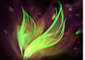
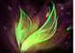

Dota 2 Builds
Windranger
Западные леса крепко хранят свои секреты. Один из них — Лиралей, непревзойденная лучница лесов, любимица ветра. Семья Лиралей, известной теперь как ветрокрылая Windranger, была убита ночью во время шторма — буря снесла дом до основания, разнеся все вокруг. Только новорожденная выжила среди развалин, пронизанных смертью и разрушением. Когда шторм стих, ветер услышал удачливого младенца, плачущего в траве. Он пожалел ребенка и перенес его по воздуху на порог дома в соседней деревне. В последующие годы ветер неоднократно навещал ее, наблюдая со стороны, как она оттачивает свои навыки. Теперь, после многих лет тренировок, Windranger никогда не промахивается мимо цели. Она двигается с ослепительной скоростью, будто бы подгоняемая ветром. Благодаря шквалу стрел, которым она встречает врагов, она стала почти такой же смертоносной, как сама природа.
Способности/Abulities
Shackleshot
Связывает цель с находящимся позади неё врагом или деревом. Если цель не будет с чем-либо связана, длительность оглушения сократится до 0,75 сек.

Способность: направленная на юнита
Действует на: врагов
Дальность применения: 800
Радиус связки: 575
Угол поиска связки: 46
Максимальное кол-во целей: 2
Максимальное оглушение: 2/2,6/3,2/3,8
Минимальное оглушение: 0,75
Мастерство владения луком позволяет Лиралей выпустить стрелу с толстой верёвкой, которая не даст жертве вырваться.Powershot
Герой заряжает лук, чтобы совершить мощный выстрел. Стрела наносит урон врагам. Урон увеличивается по мере зарядки, которая длится не более 1 сек., и снижается с каждым задетым врагом.Способность: прерываемая/направленная на точку
Действует на: врагов
Тип урона: магический
Дальность применения: 2600
Дистанция прохождения: 3000
Радиус урона: 125
Макс. время произнесения: 1
Макс. урон: 150/250/350/450(Талант: 0,7)
Уменьшение урона за попадание по юниту: 20%
В ранние годы своих тренировок Лиралей научилась стрелять мощными стрелами, которые на пути к своей цели пробивают даже деревья.Windrun
Увеличивает скорость передвижения героя и позволяет ему уворачиваться от всех физических атак, при этом замедляя передвижение врагов поблизости.Способность: ненаправленная
Действует на: врагов/себя
Радиус замедления: 325
Уклонение:100%
Доп. скорость передвижения: 60%
Замедление скорости передвижения врагов: 15/20/25/30%
Длительность задержки ауры: 2,5
Длительность эффекта:3/4/5/6
Лиралей зачаровывает порывы ветра, и они отражают удары по ней.Gale Force
Призывает могучий порыв ветра, который толкает в выбранном направлении всех врагов в области действия. Векторное применение.Способность: направленная на точку/векторное применение
Действует на: врагов
Дальность применения: 1500
Радиус действия: 1000
Скорость толчка: 240
Длительность толчка: 3
Длительность задержки ауры: 0,5
Для активации способности требуется Aghanim's Shard
Лиралей наконец научилась взывать к мощи, принадлежащей ей по праву рождения.Focus Fire
Герой призывает вихрь, увеличивающий скорость его атаки по выбранному вражескому существу или строению на 300/400/500. Весь урон от этих атак будет уменьшен, за исключением урона от эффектов предметов.Способность: направленная на юнита
Действует на: себя
Дальность применения: 600
Доп. скорость атаки: 350/425/500
Уменьшение урона: 25% (Талант: 9%)
Длительность: 20
Уменьшение перезарядки при убийстве жертвы Focus Fire: 0 (Талант: 20)
Способность Лиралей обрушить на оппонента шквал стрел — пусть и в ущерб точности — просто бесподобна.Сборка/Builds
Начальный закуп:


 

Основные предметы:


YOUTUBE:GREYSHARK

YOUTUBE:GREYSHARK
ИСПОЛЬЗОВАТЬ ЭТОТ ИМБА БИЛД